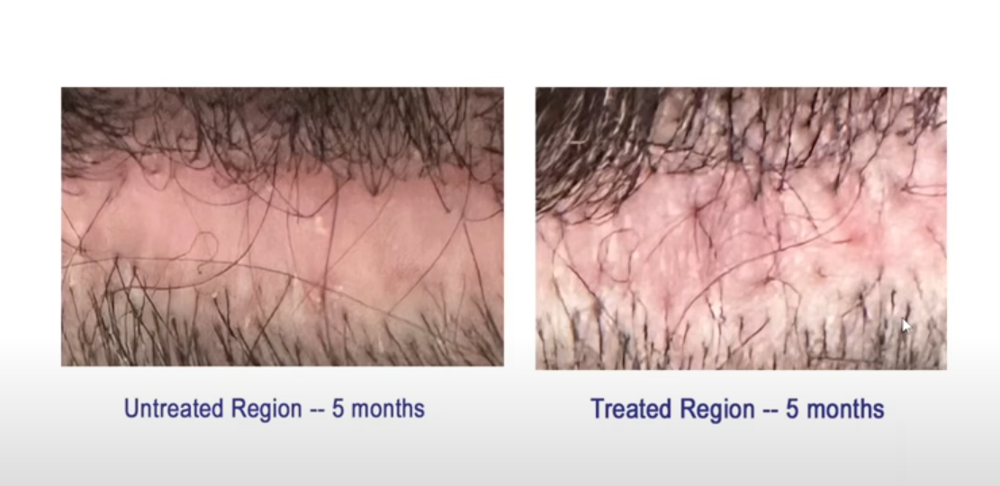
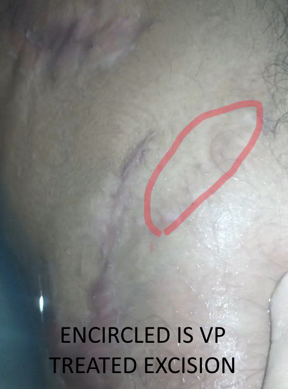
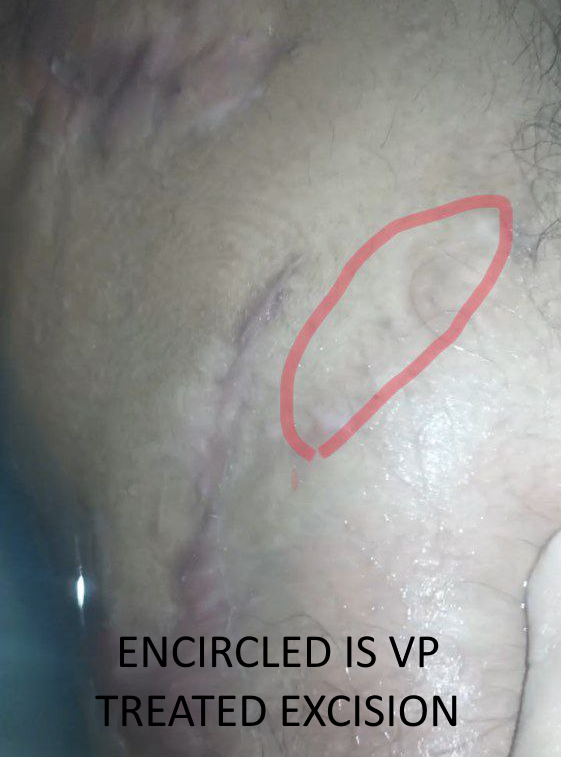
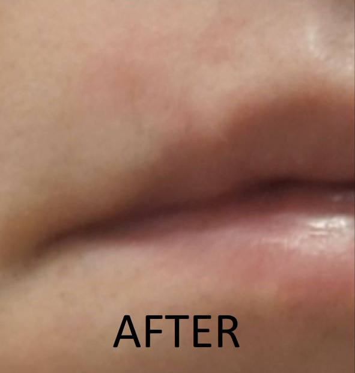
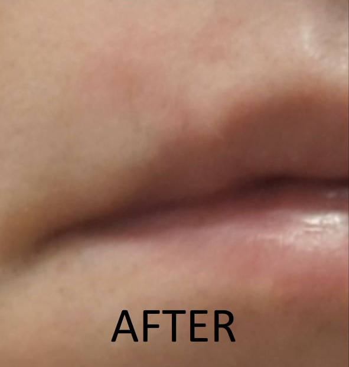

Description
On July 11th, 2023, Dr. Bloxham trialed verteporfin on 3 FUT patients on his YouTube channel. These patients were unique; different skin-types, different histories (some had prior surgery, some did not), and different amounts of tissue were taken and tested. Some had sections of scar removed, treated with verteporfin and closed again; others had virgin tissue removed, treated with verteporfin, and closed. Differing concentrations (based upon past studies) of the medication were used as well. The study is still ongoing but results already appear promising, with more neogenesis of hair follicles being present in the treated regions, as well as healthier looking skin.



 

 
